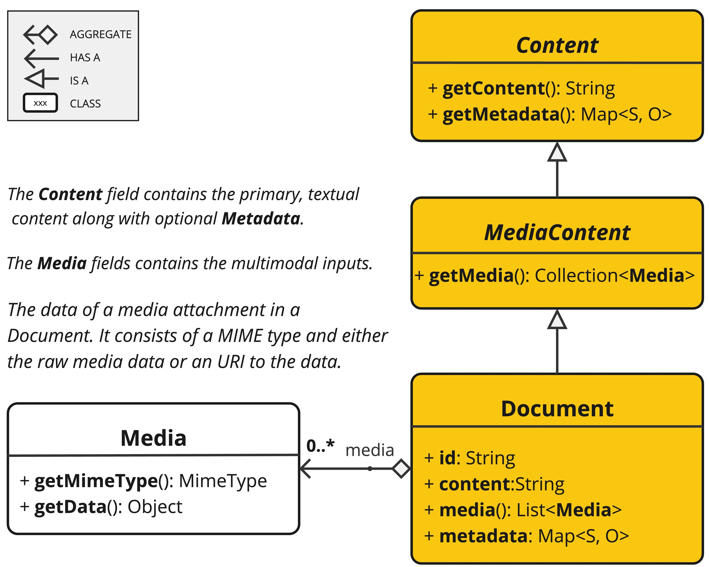
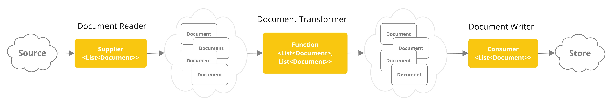
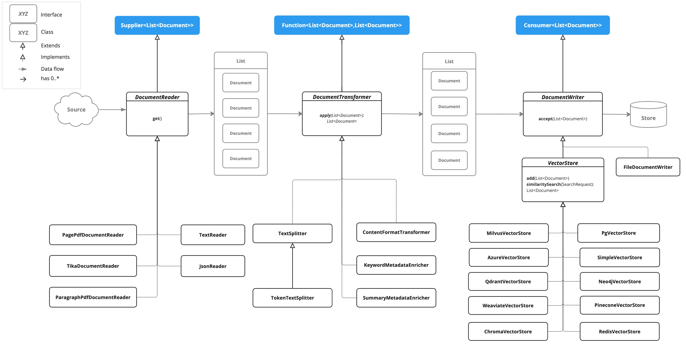

ETL 管道 #
提取、转换和加载 (ETL) 框架是检索增强生成 (RAG) 用例中数据处理的支柱。
ETL 管道协调从原始数据源到结构化向量存储的流程，确保数据采用 AI 模型检索的最佳格式。
RAG 用例是文本，通过从数据主体中检索相关信息来增强生成模型的功能，从而提高生成输出的质量和相关性。
API 概述 #
ETL 管道创建、转换和存储 Document 实例。

Document 类包含文本、元数据和可选的附加媒体类型，如图像、音频和视频。
ETL 管道有三个主要组件，
- 实现 Supplier<List
> DocumentReader - 实现 Function<List
, List > 的 DocumentTransformer - 实现 Consumer<List
> 的 DocumentWriter
Document 类内容是在 DocumentReader 的帮助下从 PDF、文本文件和其他文档类型创建的。
要构建一个简单的 ETL 管道，您可以将每种类型的实例链接在一起。

假设我们有以下这三种 ETL 类型的实例
- PagePdfDocumentReader 是 DocumentReader 的一个实现
- TokenTextSplitter 是 DocumentTransformer 的一个实现
- VectorStore 是 DocumentWriter 的一个实现
要执行将数据基本加载到矢量数据库中以供检索增强生成模式使用的操作，请使用以下 Java 函数样式语法代码。
vectorStore.accept(tokenTextSplitter.apply(pdfReader.get()));
或者，您可以使用更自然地表达域的方法名称
vectorStore.write(tokenTextSplitter.split(pdfReader.read()));
ETL 接口 #
ETL 管道由以下接口和实现组成。详细的 [ ETL 类图](#etl-class-diagram)在 [ ETL 类图](#etl-class-diagram)部分中展示。
文档阅读器 #
提供来自不同来源的文档来源。
public interface DocumentReader extends Supplier<List<Document>> {
default List<Document> read() {
return get();
}
}
文档转换器 #
作为处理工作流程的一部分，转换一批文档。
public interface DocumentTransformer extends Function<List<Document>, List<Document>> {
default List<Document> transform(List<Document> transform) {
return apply(transform);
}
}
文档编写器 #
管理 ETL 过程的最后阶段，准备要存储的文档。
public interface DocumentWriter extends Consumer<List<Document>> {
default void write(List<Document> documents) {
accept(documents);
}
}
ETL 类图 #
下面的类图说明了 ETL 接口和实现。

文档阅读器 #
JsonReader 处理 JSON 文档，将其转换为 Document 对象列表。
例子 #
@Component
class MyJsonReader {
private final Resource resource;
MyJsonReader(@Value("classpath:bikes.json") Resource resource) {
this.resource = resource;
}
List<Document> loadJsonAsDocuments() {
JsonReader jsonReader = new JsonReader(this.resource, "description", "content");
return jsonReader.get();
}
}
构造函数选项 #
JsonReader 提供了几个构造函数选项：
参数 #
- resource ：指向 JSON 文件的 Spring Resource 对象。
- jsonKeysToUse ：JSON 中的键数组，应用于生成的 Document 对象中的文本内容。
- jsonMetadataGenerator ：可选的 JsonMetadataGenerator ，用于为每个 Document 创建元数据。
行为 #
JsonReader 对 JSON 内容的处理如下：
- 它可以处理 JSON 数组和单个 JSON 对象。
- 对于每个 JSON 对象（无论是数组还是单个对象）：
- 它根据指定的 jsonKeysToUse 提取内容。
- 如果没有指定键，则使用整个 JSON 对象作为内容。
- 它使用提供的 JsonMetadataGenerator （如果未提供，则为空）生成元数据。
- 它使用提取的内容和元数据创建一个 Document 对象。
- 它根据指定的 jsonKeysToUse 提取内容。
- 如果没有指定键，则使用整个 JSON 对象作为内容。
- 它使用提供的 JsonMetadataGenerator （如果未提供，则为空）生成元数据。
- 它使用提取的内容和元数据创建一个 Document 对象。
使用 JSON 指针 #
JsonReader 现在支持使用 JSON 指针检索 JSON 文档的特定部分。此功能让您可以轻松地从复杂的 JSON 结构中提取嵌套数据。
get(String pointer) 方法 #
public List<Document> get(String pointer)
此方法允许您使用 JSON 指针来检索 JSON 文档的特定部分。
参数 #
- pointer ：JSON 指针字符串（如 RFC 6901 中所定义），用于在 JSON 结构中定位所需元素。
返回值 #
- 返回一个 List
其中包含从指针定位的 JSON 元素解析的文档。
行为 #
- 该方法使用提供的 JSON 指针导航到 JSON 结构中的特定位置。
- 如果指针有效并且指向现有元素：
- 对于 JSON 对象：它返回一个包含单个文档的列表。
- 对于 JSON 数组：它返回一个文档列表，数组中的每个元素对应一个文档。
- 对于 JSON 对象：它返回一个包含单个文档的列表。
- 对于 JSON 数组：它返回一个文档列表，数组中的每个元素对应一个文档。
- 如果指针无效或指向不存在的元素，则会抛出 IllegalArgumentException 。
例子 #
JsonReader jsonReader = new JsonReader(resource, "description");
List<Document> documents = this.jsonReader.get("/store/books/0");
JSON 结构示例 #
[
{
"id": 1,
"brand": "Trek",
"description": "A high-performance mountain bike for trail riding."
},
{
"id": 2,
"brand": "Cannondale",
"description": "An aerodynamic road bike for racing enthusiasts."
}
]
在这个例子中，如果 JsonReader 配置了 "description" 作为 jsonKeysToUse ，它将创建 Document 对象，其内容是数组中每辆自行车的“description”字段的值。
笔记 #
- JsonReader 使用 Jackson 进行 JSON 解析。
- 它可以通过使用数组流来有效地处理大型 JSON 文件。
- 如果在 jsonKeysToUse 中指定了多个键，则内容将是这些键的值的串联。
- 该读取器非常灵活，可以通过自定义 jsonKeysToUse 和 JsonMetadataGenerator 来适应各种 JSON 结构。
文本 #
TextReader 处理纯文本文档，将其转换为 Document 对象列表。
例子 #
@Component
class MyTextReader {
private final Resource resource;
MyTextReader(@Value("classpath:text-source.txt") Resource resource) {
this.resource = resource;
}
List<Document> loadText() {
TextReader textReader = new TextReader(this.resource);
textReader.getCustomMetadata().put("filename", "text-source.txt");
return textReader.read();
}
}
构造函数选项 #
TextReader 提供了两个构造函数选项：
参数 #
- resourceUrl ：表示要读取的资源的 URL 的字符串。
- resource ：指向文本文件的 Spring Resource 对象。
配置 #
- setCharset(Charset charset) ：设置用于读取文本文件的字符集。默认为 UTF-8。
- getCustomMetadata() ：返回一个可变映射，您可以在其中为文档添加自定义元数据。
行为 #
TextReader 处理文本内容如下：
- 它将文本文件的全部内容读入单个 Document 对象。
- 文件的内容成为 Document 的内容。
- 元数据会自动添加到 Document 中：
- charset ：用于读取文件的字符集（默认值：“UTF-8”）。
- source ：源文本文件的文件名。
- charset ：用于读取文件的字符集（默认值：“UTF-8”）。
- source ：源文本文件的文件名。
- 通过 getCustomMetadata() 添加的任何自定义元数据都包含在 Document 中。
笔记 #
- TextReader 将整个文件内容读入内存，因此它可能不适合非常大的文件。
- 如果需要将文本拆分成更小的块，则可以在阅读文档后使用像 TokenTextSplitter 这样的文本拆分器：
List<Document> documents = textReader.get();
List<Document> splitDocuments = new TokenTextSplitter().apply(this.documents);
- 读取器使用 Spring 的 Resource 抽象，允许它从各种来源（类路径、文件系统、URL 等）读取。
- 可以使用 getCustomMetadata() 方法将自定义元数据添加到阅读器创建的所有文档中。
HTML（JSoup） #
Jsoup``Document``Reader 处理 HTML 文档，使用 JSoup 库将其转换为 Document 对象列表。
例子 #
@Component
class MyHtmlReader {
private final Resource resource;
MyHtmlReader(@Value("classpath:/my-page.html") Resource resource) {
this.resource = resource;
}
List<Document> loadHtml() {
JsoupDocumentReaderConfig config = JsoupDocumentReaderConfig.builder()
.selector("article p") // Extract paragraphs within <article> tags
.charset("ISO-8859-1") // Use ISO-8859-1 encoding
.includeLinkUrls(true) // Include link URLs in metadata
.metadataTags(List.of("author", "date")) // Extract author and date meta tags
.additionalMetadata("source", "my-page.html") // Add custom metadata
.build();
JsoupDocumentReader reader = new JsoupDocumentReader(this.resource, config);
return reader.get();
}
}
```JsoupDocumentReaderConfig` 允许您自定义 JsoupDocumentReader`` 的行为：
- charset ：指定 HTML 文档的字符编码（默认为“UTF-8”）。
- selector ：JSoup CSS 选择器，指定从哪些元素中提取文本（默认为“body”）。
- separator ：用于连接多个选定元素的文本的字符串（默认为“\n”）。
- allElements ：如果为 true ，则从 元素中提取所有文本，忽略 selector （默认为 false ）。
- groupByElement ：如果为 true ，则为 selector 匹配的每个元素创建一个单独的 Document （默认为 false ）。
- includeLinkUrls ：如果为 true ，则提取绝对链接 URL 并将其添加到元数据中（默认为 false ）。
- metadataTags ：要从中提取内容的 标签名称列表（默认为 [“description”, “keywords”] ）。
- additionalMetadata ：允许您向所有创建的 Document 对象添加自定义元数据。
示例文档：my-page.html #
<!DOCTYPE html>
<html lang="en">
<head>
<meta charset="UTF-8">
<title>My Web Page</title>
<meta name="description" content="A sample web page for Spring AI">
<meta name="keywords" content="spring, ai, html, example">
<meta name="author" content="John Doe">
<meta name="date" content="2024-01-15">
<link rel="stylesheet" href="style.css">
</head>
<body>
<header>
<h1>Welcome to My Page</h1>
</header>
<nav>
<ul>
<li><a href="/">Home</a></li>
<li><a href="/about">About</a></li>
</ul>
</nav>
<article>
<h2>Main Content</h2>
<p>This is the main content of my web page.</p>
<p>It contains multiple paragraphs.</p>
<a href="https://www.example.com">External Link</a>
</article>
<footer>
<p>© 2024 John Doe</p>
</footer>
</body>
</html>
行为：
Jsoup``Document``Reader 处理 HTML 内容并根据配置创建 Document 对象：
- selector 确定哪些元素用于文本提取。
- 如果 allElements 为 true ， 内的所有文本都将提取到单个 Document 中。
- 如果 groupByElement 为 true ，则与 selector 匹配的每个元素都会创建一个单独的 Document 。
- 如果 allElements 和 groupByElement 都不为 true ，则使用 separator 连接所有与 selector 匹配的元素的文本。
- 文档标题、指定 标签的内容以及（可选）链接 URL 被添加到 Document 元数据中。
- 用于解析相对链接的基本 URI 将从 URL 资源中提取。
阅读器保留所选元素的文本内容，但删除其中的任何 HTML 标签。
Markdown``Document``Reader 处理 Markdown 文档，将其转换为 Document 对象列表。
例子 #
@Component
class MyMarkdownReader {
private final Resource resource;
MyMarkdownReader(@Value("classpath:code.md") Resource resource) {
this.resource = resource;
}
List<Document> loadMarkdown() {
MarkdownDocumentReaderConfig config = MarkdownDocumentReaderConfig.builder()
.withHorizontalRuleCreateDocument(true)
.withIncludeCodeBlock(false)
.withIncludeBlockquote(false)
.withAdditionalMetadata("filename", "code.md")
.build();
MarkdownDocumentReader reader = new MarkdownDocumentReader(this.resource, config);
return reader.get();
}
}
MarkdownDocumentReaderConfig 允许您自定义 MarkdownDocumentReader 的行为：
- horizontalRuleCreateDocument ：设置为 true 时，Markdown 中的水平规则将创建新的 Document 对象。
- includeCodeBlock ：设置为 true 时，代码块将与周围文本包含在同一个 Document 中。设置为 false 时，代码块将创建单独的 Document 对象。
- includeBlockquote ：设置为 true 时，区块引用将与周围文本包含在同一个 Document 中。设置为 false 时，区块引用将创建单独的 Document 对象。
- additionalMetadata ：允许您向所有创建的 Document 对象添加自定义元数据。
示例文档：code.md #
This is a Java sample application:
```java
package com.example.demo;
import org.springframework.boot.SpringApplication;
import org.springframework.boot.autoconfigure.SpringBootApplication;
@SpringBootApplication
public class DemoApplication {
public static void main(String[] args) {
SpringApplication.run(DemoApplication.class, args);
}
}
Markdown also provides the possibility to use inline code formatting throughout the entire sentence.
Another possibility is to set block code without specific highlighting:
./mvnw spring-javaformat:apply
行为：MarkdownDocumentReader 处理 Markdown 内容并根据配置创建 Document 对象：
- 标题成为 Document 对象中的元数据。
- 段落成为 Document 对象的内容。
- 代码块可以分离到自己的 Document 对象中或包含在周围的文本中。
- 块引用可以分离到自己的 Document 对象中，也可以包含在周围的文本中。
- 水平规则可用于将内容分割成单独的 Document 对象。
阅读器保留 Document 对象内容中的内联代码、列表和文本样式等格式。
## PDF 页面
``PagePdfDocumentReader`` 使用 Apache PdfBox 库来解析 PDF 文档
使用 Maven 或 Gradle 将依赖项添加到您的项目。
```xml
<dependency>
<groupId>org.springframework.ai</groupId>
<artifactId>spring-ai-pdf-document-reader</artifactId>
</dependency>
或者到你的 Gradle build.gradle 构建文件。
dependencies {
implementation 'org.springframework.ai:spring-ai-pdf-document-reader'
}
例子 #
@Component
public class MyPagePdfDocumentReader {
List<Document> getDocsFromPdf() {
PagePdfDocumentReader pdfReader = new PagePdfDocumentReader("classpath:/sample1.pdf",
PdfDocumentReaderConfig.builder()
.withPageTopMargin(0)
.withPageExtractedTextFormatter(ExtractedTextFormatter.builder()
.withNumberOfTopTextLinesToDelete(0)
.build())
.withPagesPerDocument(1)
.build());
return pdfReader.read();
}
}
PDF 段落 #
ParagraphPdf``Document``Reader 使用 PDF 目录（例如目录）信息将输入的 PDF 拆分为文本段落，并按段落输出单个 Document 。注意：并非所有 PDF 文档都包含 PDF 目录。
依赖项 #
使用 Maven 或 Gradle 将依赖项添加到您的项目。
<dependency>
<groupId>org.springframework.ai</groupId>
<artifactId>spring-ai-pdf-document-reader</artifactId>
</dependency>
或者到你的 Gradle build.gradle 构建文件。
dependencies {
implementation 'org.springframework.ai:spring-ai-pdf-document-reader'
}
例子 #
@Component
public class MyPagePdfDocumentReader {
List<Document> getDocsFromPdfWithCatalog() {
ParagraphPdfDocumentReader pdfReader = new ParagraphPdfDocumentReader("classpath:/sample1.pdf",
PdfDocumentReaderConfig.builder()
.withPageTopMargin(0)
.withPageExtractedTextFormatter(ExtractedTextFormatter.builder()
.withNumberOfTopTextLinesToDelete(0)
.build())
.withPagesPerDocument(1)
.build());
return pdfReader.read();
}
}
蒂卡（DOCX、PPTX、HTML……） #
TikaDocumentReader 使用 Apache Tika 从各种文档格式（例如 PDF、DOC/DOCX、PPT/PPTX 和 HTML）中提取文本。有关支持格式的完整列表，请参阅 [
Tika 文档](
https://tika.apache.org/3.1.0/formats.html) 。
依赖项 #
<dependency>
<groupId>org.springframework.ai</groupId>
<artifactId>spring-ai-tika-document-reader</artifactId>
</dependency>
或者到你的 Gradle build.gradle 构建文件。
dependencies {
implementation 'org.springframework.ai:spring-ai-tika-document-reader'
}
例子 #
@Component
class MyTikaDocumentReader {
private final Resource resource;
MyTikaDocumentReader(@Value("classpath:/word-sample.docx")
Resource resource) {
this.resource = resource;
}
List<Document> loadText() {
TikaDocumentReader tikaDocumentReader = new TikaDocumentReader(this.resource);
return tikaDocumentReader.read();
}
}
变形金刚 #
文本分割器 #
TextSplitter 是一个抽象基类，有助于划分文档以适应 AI 模型的上下文窗口。
`TokenTextSplitter``` 是 TextSplitter`` 的一个实现，它使用 CL100K_BASE 编码根据标记计数将文本拆分成块。
用法 #
@Component
class MyTokenTextSplitter {
public List<Document> splitDocuments(List<Document> documents) {
TokenTextSplitter splitter = new TokenTextSplitter();
return splitter.apply(documents);
}
public List<Document> splitCustomized(List<Document> documents) {
TokenTextSplitter splitter = new TokenTextSplitter(1000, 400, 10, 5000, true);
return splitter.apply(documents);
}
}
构造函数选项 #
TokenTextSplitter 提供了两个构造函数选项：
参数 #
- defaultChunkSize ：标记中每个文本块的目标大小（默认值：800）。
- minChunkSizeChars ：每个文本块的最小字符大小（默认值：350）。
- minChunkLengthToEmbed ：要包含的块的最小长度（默认值：5）。
- maxNumChunks ：从文本生成的最大块数（默认值：10000）。
- keepSeparator ：是否在块中保留分隔符（如换行符）（默认值：true）。
行为 #
TokenTextSplitter 对文本内容进行如下处理：
例子 #
Document doc1 = new Document("This is a long piece of text that needs to be split into smaller chunks for processing.",
Map.of("source", "example.txt"));
Document doc2 = new Document("Another document with content that will be split based on token count.",
Map.of("source", "example2.txt"));
TokenTextSplitter splitter = new TokenTextSplitter();
List<Document> splitDocuments = this.splitter.apply(List.of(this.doc1, this.doc2));
for (Document doc : splitDocuments) {
System.out.println("Chunk: " + doc.getContent());
System.out.println("Metadata: " + doc.getMetadata());
}
笔记 #
- TokenTextSplitter 使用 jtokkit 库中的 CL100K_BASE 编码，与较新的 OpenAI 模型兼容。
- 分割器尝试通过在可能的情况下断开句子边界来创建具有语义意义的块。
- 原始文档的元数据被保留并复制到从该文档派生的所有块。
- 如果 copyContentFormatter 设置为 true （默认行为），则原始文档中的内容格式化程序（如果设置）也会被复制到派生块中。
- 该分割器对于为具有标记限制的大型语言模型准备文本特别有用，可确保每个块都在模型的处理能力范围内。
内容格式转换器 #
确保所有文档的内容格式统一。
关键字元数据丰富器 #
KeywordMetadataEnricher 是一个 DocumentTransformer ，它使用生成式 AI 模型从文档内容中提取关键字并将其添加为元数据。
用法 #
@Component
class MyKeywordEnricher {
private final ChatModel chatModel;
MyKeywordEnricher(ChatModel chatModel) {
this.chatModel = chatModel;
}
List<Document> enrichDocuments(List<Document> documents) {
KeywordMetadataEnricher enricher = new KeywordMetadataEnricher(this.chatModel, 5);
return enricher.apply(documents);
}
}
构造函数 #
KeywordMetadataEnricher 构造函数采用两个参数：
行为 #
KeywordMetadataEnricher 处理文档如下：
定制 #
可以通过修改类中的 KEYWORDS_TEMPLATE 常量来自定义关键字提取提示。默认模板为：
\{context_str}. Give %s unique keywords for this document. Format as comma separated. Keywords:
其中 {context_str} 替换为文档内容， %s 替换为指定的关键字计数。
例子 #
ChatModel chatModel = // initialize your chat model
KeywordMetadataEnricher enricher = new KeywordMetadataEnricher(chatModel, 5);
Document doc = new Document("This is a document about artificial intelligence and its applications in modern technology.");
List<Document> enrichedDocs = enricher.apply(List.of(this.doc));
Document enrichedDoc = this.enrichedDocs.get(0);
String keywords = (String) this.enrichedDoc.getMetadata().get("excerpt_keywords");
System.out.println("Extracted keywords: " + keywords);
笔记 #
- KeywordMetadataEnricher 需要一个功能正常的 ChatModel 来生成关键字。
- 关键字数量必须为 1 或更大。
- 丰富器将“excerpt_keywords”元数据字段添加到每个处理的文档中。
- 生成的关键字以逗号分隔的字符串形式返回。
- 该丰富器对于提高文档可搜索性和为文档生成标签或类别特别有用。
摘要元数据丰富器 #
SummaryMetadataEnricher 是一个 DocumentTransformer ，它使用生成式 AI 模型为文档创建摘要并将其添加为元数据。它可以为当前文档以及相邻文档（上一个和下一个）生成摘要。
用法 #
@Configuration
class EnricherConfig {
@Bean
public SummaryMetadataEnricher summaryMetadata(OpenAiChatModel aiClient) {
return new SummaryMetadataEnricher(aiClient,
List.of(SummaryType.PREVIOUS, SummaryType.CURRENT, SummaryType.NEXT));
}
}
@Component
class MySummaryEnricher {
private final SummaryMetadataEnricher enricher;
MySummaryEnricher(SummaryMetadataEnricher enricher) {
this.enricher = enricher;
}
List<Document> enrichDocuments(List<Document> documents) {
return this.enricher.apply(documents);
}
}
构造函数 #
SummaryMetadataEnricher 提供了两个构造函数：
参数 #
- chatModel ：用于生成摘要的 AI 模型。
- summaryTypes ： SummaryType 枚举值列表，指示要生成哪些摘要（PREVIOUS、CURRENT、NEXT）。
- summaryTemplate ：用于摘要生成的自定义模板（可选）。
- metadataMode ：指定生成摘要时如何处理文档元数据（可选）。
行为 #
SummaryMetadataEnricher 处理文档如下：
定制 #
可以通过提供自定义 summaryTemplate 来定制摘要生成提示。默认模板为：
"""
Here is the content of the section:
{context_str}
Summarize the key topics and entities of the section.
Summary:
"""
例子 #
ChatModel chatModel = // initialize your chat model
SummaryMetadataEnricher enricher = new SummaryMetadataEnricher(chatModel,
List.of(SummaryType.PREVIOUS, SummaryType.CURRENT, SummaryType.NEXT));
Document doc1 = new Document("Content of document 1");
Document doc2 = new Document("Content of document 2");
List<Document> enrichedDocs = enricher.apply(List.of(this.doc1, this.doc2));
// Check the metadata of the enriched documents
for (Document doc : enrichedDocs) {
System.out.println("Current summary: " + doc.getMetadata().get("section_summary"));
System.out.println("Previous summary: " + doc.getMetadata().get("prev_section_summary"));
System.out.println("Next summary: " + doc.getMetadata().get("next_section_summary"));
}
提供的示例演示了预期的行为：
- 对于两个文档的列表，两个文档都会收到一个 section_summary 。
- 第一个文档收到 next_section_summary 但没有 prev_section_summary 。
- 第二个文档收到 prev_section_summary 但没有 next_section_summary 。
- 第一个文档的 section_summary 与第二个文档的 prev_section_summary 匹配。
- 第一个文档的 next_section_summary 与第二个文档的 section_summary 匹配。
笔记 #
- SummaryMetadataEnricher 需要一个功能正常的 ChatModel 来生成摘要。
- 丰富器可以处理任意大小的文档列表，并正确处理第一个和最后一个文档的边缘情况。
- 该丰富器对于创建上下文感知摘要特别有用，可以更好地理解序列中的文档关系。
- MetadataMode 参数允许控制如何将现有元数据合并到摘要生成过程中。
作家 #
文件 #
File```Document``Writer`` 是 ```Document``Writer 实现，它将 Document 对象列表的内容写入文件。
用法 #
@Component
class MyDocumentWriter {
public void writeDocuments(List<Document> documents) {
FileDocumentWriter writer = new FileDocumentWriter("output.txt", true, MetadataMode.ALL, false);
writer.accept(documents);
}
}
构造函数 #
FileDocumentWriter 提供了三个构造函数：
参数 #
- fileName ：要写入文档的文件的名称。
- withDocumentMarkers ：是否在输出中包含文档标记（默认值：false）。
- metadataMode ：指定要写入文件的文档内容（默认值：MetadataMode.NONE）。
- append ：如果为 true，数据将被写入文件末尾而不是开头（默认值：false）。
行为 #
FileDocumentWriter 按如下方式处理文档：
文档标记 #
当 withDocumentMarkers 设置为 true 时，编写器将以以下格式为每个文档添加标记：
### Doc: [index], pages:[start_page_number,end_page_number]
元数据处理 #
编写器使用两个特定的元数据键：
- page_number ：表示文档的起始页码。
- end_page_number ：表示文档的结束页码。
这些用于编写文档标记。
例子 #
List<Document> documents = // initialize your documents
FileDocumentWriter writer = new FileDocumentWriter("output.txt", true, MetadataMode.ALL, true);
writer.accept(documents);
这会将所有文档写入“output.txt”，包括文档标记，使用所有可用的元数据，如果文件已存在则附加到该文件。
笔记 #
- 写入器使用 FileWriter ，因此它使用操作系统的默认字符编码写入文本文件。
- 如果在写入过程中发生错误，则会抛出 RuntimeException ，并以原始异常作为其原因。
- metadataMode 参数允许控制如何将现有元数据合并到书面内容中。
- 该编写器对于调试或创建文档集合的人类可读输出特别有用。
矢量存储 #
提供与各种向量存储的集成。完整列表请参阅 [ Vector DB 文档](vectordbs.html) 。